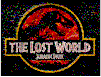
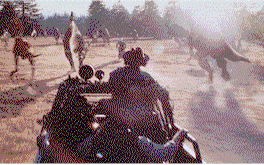
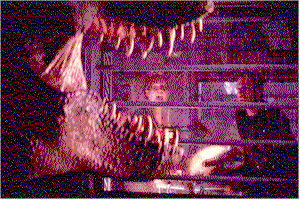

|
|
|
| Movie Credits | Buy It! |
The Lost World
Review by Carrie
Gorringe
Posted 23 May 1997
|  | Directed by Steven Spielberg Starring Jeff Goldblum, Julianne Moore, Screenplay by David Koepp |
Dr. Ian Malcolm (Goldblum) has experienced a rough four years since we last encountered him in the billion-dollar baby known as Jurassic Park. After the failure of the park, Malcolm has been derided by the media as a fraud who has spread lies about that nice multinational biotech corporation known as Ingen whose motives for genetically engineering dinosaurs can only be as pure as the driven snow; consequently, his professional life is in shreds, people stare at him on the subway and laugh, etcetera, etcetera. He is saved from said morass through a summons to Ingen’s headquarters where the doddering old fool who started this genetic mess in the first place, our old friend, Dr. John Hammond (Attenborough), informs Malcolm that there is another cache of Ingen’s dinosaurs on another one of those obscure islands, this one named Isla Sorna. Hammond informs Malcolm that – wouldn’t you know it – there’s been yet another "little" problem: these dinos have managed to transcend their genetic engineering and have taken over the island. Unfortunately, the island was also discovered by a rich couple, whose daughter nearly became an appetizer. So, now, if Malcolm wouldn’t mind terribly much, would he take a team of four specialists over to the island and do a little recording for posterity, before everything is quarantined, and save Ingen’s bottom line in the process? As an additional incentive, Hammond tells Malcolm that Malcolm’s girlfriend, paleontologist Sarah Harding (Moore), is already at the site. So Malcolm gathers up an expedition team, says goodbye to his disgruntled teenage daughter, Kelly (an inspired performance by Chester), and sets off for Isla Sorna with the intent of getting Harding and her team off the island as soon as possible.
However, Hammond’s nephew has other ideas, including a reworking of some of Dad’s nuttier plans, so he, too sends over a team of Great White Hunters to capture some animals (led by Pete Postlethwaite, possessed of all fanatical earnestness and great gaunt cheekbones), and, before you can sing a chorus of Do You Know the Way to San Diego?, everyone is off in mad pursuit of something, whether it’s an unintentional end as dino dinner or to thwart those misguided plans that threaten Civilization As We Know It. For an added soupcon of tension, the audience is informed that Isla Sorna is part of a chain of islands known as the "Five Deaths", so you just know that the participants’ paths to salvation aren’t going to be smooth.
Unfortunately, there is a sixth death in the offing, and that is the film itself. For an action film, Lost World is surprisingly endowed with very little of it in comparison with its on-the-edge-of-your-seat predecessor; the dinosaurs in this film may be from the Jurassic age, but the film’s pace is most assuredly a product of the Ice Age. Glaciers move faster than does the first hour of Lost World. During this introductory entr’acte, Spielberg and Koepp overload the audience with superfluous detail concerning Malcolm’s personal life, as if the character was ever meant to do anything other than to provide wryly ironic commentary about himself and/or the chaos around him. This is not to say that Jeff Goldblum doesn’t live up to the expectations assumed of him and more, but the whole affair reeks of an attempt to elevate one of the few holdovers from the original film into a more significant role; this is also referred to as a gilding of the lily – why should the audience care at all about Malcolm’s personal life, except in the most superficial sense? The key interest for the audience is to get to the dinosaurs’ use of the invading humans as take-out food as soon as possible, and to make the process of getting there as painfully damaging to one’s fingernails as possible. From what has taken place earlier, it is obvious that part one of the process doesn’t come off as expected.
Neither, most shockingly of all, does part two; aside from a few brief scenes to stir some interest, the only tension the average filmgoer will derive from this film is the twitching of glutei maximi from sheer boredom. In addition to Koepp’s lackluster script (he also crafted the dull and confused script for last year’s film version of Mission: Impossible), Spielberg’s direction is appallingly half-hearted; One gets the impression that Spielberg has become bored with the genre he and George Lucas practically revived and patented some twenty years ago; it’s as if, after the critical success of Schindler’s List, Spielberg doesn’t want to be the audience’s playmate anymore. Only the work of Postlethwaite and Goldblum provide any real center to this film, because they are the only ones who can actually invest this ridiculous enterprise with the appropriate amount of authenticity to make it seem plausible without taking themselves too seriously, unlike those in charge of the production. Even the final sequence, best described as T-Rex Versus San Diego, is not only inexcusably silly, but also appallingly predictable, as Spielberg and Koepp drag out threadbare parodies of Speed and E.T. that anyone can see coming from shot one. The sequence does possess a few trademark Spielbergian touches of nasty mischief (including one between said T-Rex and a family dog), but the mixture of violence and humor contained therein, and in the rest of the film, is so sour and so sluggishly executed that it can inspire little more than forced laughter. In the film’s defense, it can be said that the special effects have gotten better, but, without the skillful interspersing of scenes carefully crafted to extract the maximum amount of perspiration from the filmgoer, the entire exercise is one in futility and a waste of time.
Finally, there is a significance to the cumbersome nature of the title affixed to this film, one which suggests less a lack of originality than an attempt to link Lost World with the 1925 classic film , The Lost World, which also had dinosaurs (courtesy of special effects pioneer Willis O’Brien); despite its now-primitive look, overly melodramatic acting and stilted dialogue (as read from intertitles), still has the power to generate a great deal of excitement and wonder for one reason: one senses O’Brien’s joy in the exercising of his craft. Given the anemic and joyless offering from Koepp and Spielberg, there really is no danger of such confusion occurring between the two films.
Contents | Features | Reviews | News | Archives | Store
Copyright © 1999 by Nitrate Productions, Inc. All Rights Reserved.